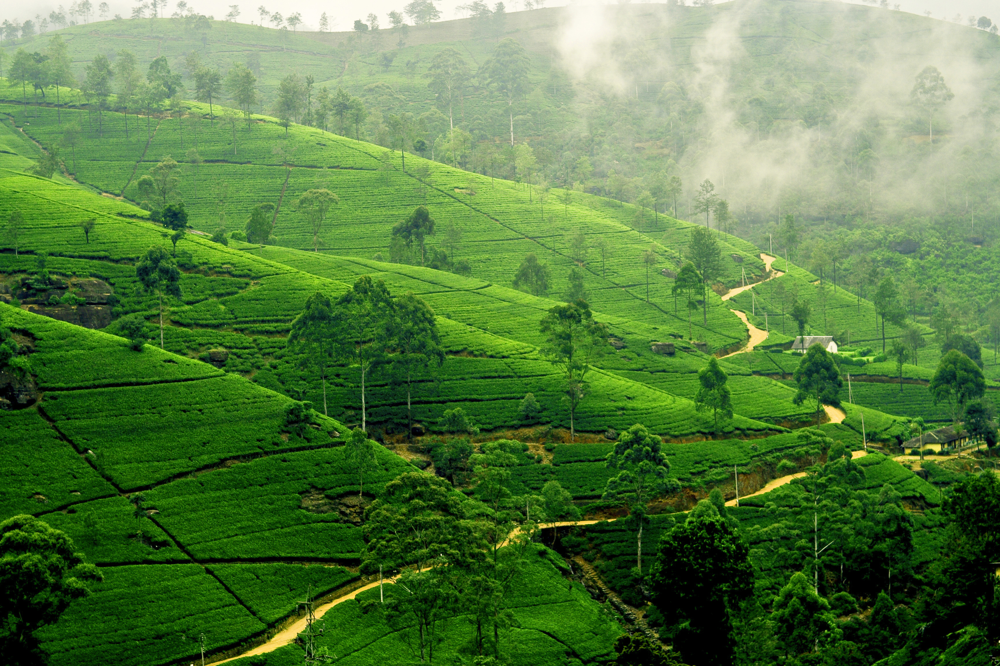
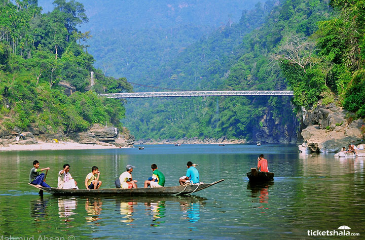
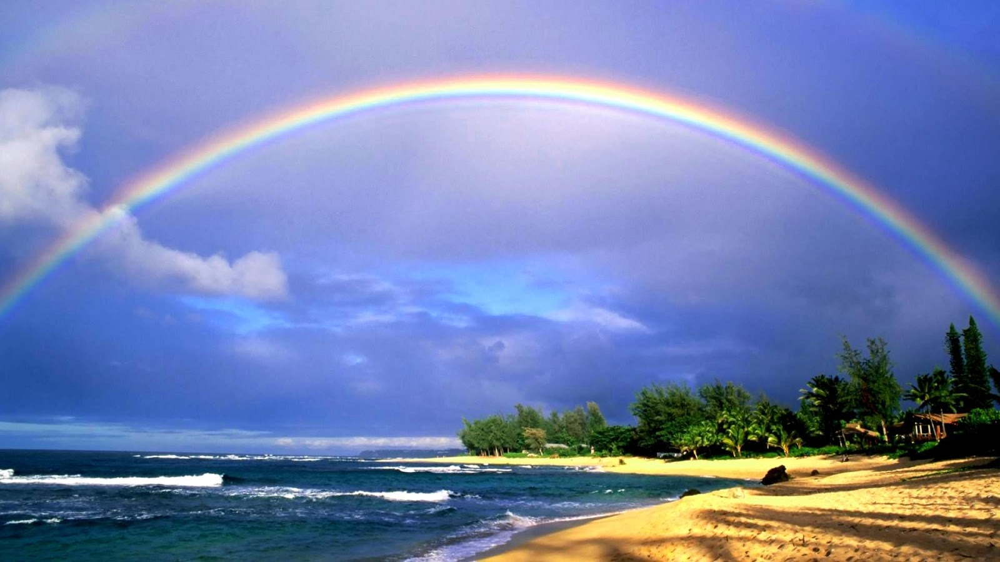

Tea production in Bangladesh
Bangladesh is an important tea producing country. Its tea industry dates back to British rule, when the East India Company initiated the tea trade in Chittagong in 1840.[1] Today, the country has 162 commercial tea estates, including many of the world's largest working plantations.[2][3] The industry accounts for 3% of global tea production, and employs more than 4 million people.[4] The tea is grown in the northern and eastern districts, the highlands, temperate climate, humidity and heavy rainfall within these districts provide a favourable ground for the production of high-quality tea....
Jaflong
Jaflong is a hill station and popular tourist destination in the Division of Sylhet, Bangladesh. It is located in Gowainghat Upazila of Sylhet District and situated at the border between Bangladesh and the Indian state of Meghalaya, overshadowed by subtropical mountains and rainforests. Jaflong is famous for its stone collections and is home of the Khasi tribe....
Cox's Bazar
Cox's Bazar (Bengali: কক্সবাজার, pronounced [kɔksbadʒaɾ]) is a city, fishing port, tourism centre and district headquarters in southeastern Bangladesh. The beach in Cox's Bazar is sandy and has a gentle slope; with an unbroken length of 120 km (75 mi), it is the longest natural sea beach in the world.[2][3][4] It is located 150 km (93 mi) south of the divisional headquarter of Chittagong. Cox's Bazar is also known by the name Panowa, which translates literally as "yellow flower". Another old name was "Palongkee"....